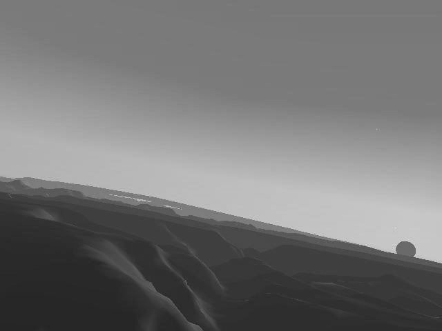
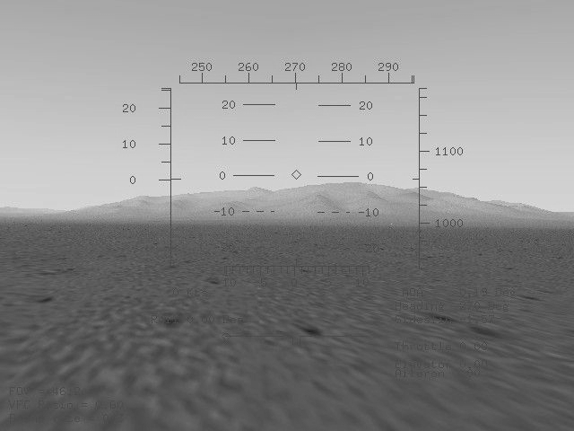

Flight Gear
The Flight Simulator for free?
by M. Basler
Given their capabilities, PC flight simulators are actually cheap. Those, who are able to buy the corresponding hardware for getting FS98 or Flight Unlimited II up and running should have the additional 50$ or so for the program, as well. Why then a flight simulator for free?
The answer is simple: We can build it ourselves. Commercial programs have a magnificant drawback. They are being build by a small group of developers defining their properties - often quite inert and sometimes not listening too much to the customers, i. e. us. But moreover: You can learn a lot doing it. Plus it is fun.
FlightGear is an approach along these lines. FSFD did already report about it in Issue 1/97. Here are some basic ideas about what FlighGear should be like for those not owning this Issue:
1. FlightGear shall be a cilivian flight simulator, although the open architecture leaves some room for extensions like weapon systems.
2. FlightGear is being developed under the terms of the GNU Public Licence within an open concept. It can be given away and the sources must (!) be freely available. Anyone, who likes to, can contribute.
3. FlightGear ought to be running as well as be build-able in a platform independent way. At the moment this includes support for Win95/NT, several flavors of UNIX including Linux and (restricted) MacIntosh. Support for MS-DOS was canceled.
After finding a first consensus in 1996 as a result of a discussion on the Internet, developers started building the graphics routines, which were completed by the end of 1996. This was around the time the first FSFD article appeared. Shortly later the project seemed to die. The main developer, at that time Eric Korpela (University of California, Berkeley) had to complete his thesis and dropped out of the project.
It was Curtis Olson (University of Minnesota) who re-started the project around the middle of 1997 and has been co-ordinating it since then. He set out a new idea: Why invent the bicycle a second time? There are several free flight simulators available running on workstations. This way, LaRCsim, which was developed by Bruce Jackson from NASA, was taken as a starting point - which, however, only run under UNIX. Those, who ever had to port a - graphics intense! - program should know about the whistles and bells of porting.
Indeed, code was ported within a few months, and by fall of the last year it was running on all platforms intended. This was something, you could show around, and development (done by enthusiasts within their spare time!) has been proceeding quickly since then.
The graphics system, being based on the OpenGL routines for providing portability, is already quite solid. Despite of the existence of several software OpenGL implementations running on every graphics card, you should try to get hardware OpenGL drivers for your card. On my computer frame rates are differing by up to a factor of 10! Frankly said: Those, who do not have a 3D card with OpenGL drivers might not be much excited about FlightGear.
For rendering the terrain an approach was accepted I consider especially clever. Based on satellite pictures, the U.S. Geological Survey provides terrain data for the whole world via the Internet. Equipped with these data as well as with the tools provided with FlightGear anyone is able to build his Scenery for his own territory, at least in principle. Pre-compiled sceneries are available for part of Arizona and (yes!) the surrounding of Munich. Starting a few weeks ago, scenery is textured now, too. There are still no airports, buildings or streets, though. However, the terrain itself is stunning and puts FS98 with its edged hills and flat world far into the shade (only compare the Grand Canyon in Fig. 1 with that of FS98).

Sun, moon and stars were realized (by Durk Talsma) very close to the reality. Contrary to FS89 there is a sun (being just rising in Fig. 1), which is where it belongs, depending on time and position of the observer as are the moon with proper phases and stars.
At this time, the flight model is limited to a little Navion airplane (inherited from LaRCsim). Inputs are given via the keyboard. Panels are not yet available, however, we've got a nice HUD (programmed by Michele America and Charlie Hotchkiss; see Fig. 2) and a rudimentary auto pilot (contributed by Jeff Goeke-Smith).

Even though this is not yet a complete simulator you can already fly it. Here is a way for those, who quickly want to take off on a Win95/NT PC.
At first, you need an Internet account. All named information and programs as well as the complete source code are available from http://www.menet.umn.edu/~clolson/fgfs/
1. Install the OpenGL drivers for your 3D graphics card (in case you did not already do so for just another game). (Not always are these provided by the card makers; for my Diamond Stealth II it is e. g. Rendition the maker of the chip who provides OpenGL drivers.) If you are unable to find hardware drivers, install the software implementation provided by Silicon Graphics (Sgi-opengl2.exe from the site above)
2. You will find an executable Win95/NT version of FlightGear, usually named Fg-win32-bin-0.XX.zip on this site, as well. Unpack the archive, for instance with pkunzip -d (because of sub directories!).
3. Download the sceneries you want. Attention: The standard scenery (Senery.detailed-0.XX.zip or the like) for Arizona includes about 5MB, while the Munich Scenery (Munich-0.XX.zip or similar) is 2MB, after all. In addition, you will need the textures from Textures-0.XX.zip. All of these have to be unpacked with pkunzip -d as well.
4. Read the file README.running, to get an idea of the controls (key strokes). Do not forget activating NumLock!
5. Invoke FlightGear with the batch file runfg32.bat. (In case this does not work, open a MS-DOS shell, set the environment variable SET FG_ROOT=C:\FlightGear by hand and run FlightGear via the command line as C:\FlightGear\bin\fg32.exe within this same shell).
As with any project being under development, some things might have changed by the time this article will appear. Those, who want plug and pay, should wait a bit longer for version 1.0 to appear. Otherwise, you might ask me (pmb@rz.uni-jena.de) for help.
The complete source code is available for those being a bit more advantageous. If you risk compiling you should have at least three things: 1 A C compiler being supported (at this time Cygnus' GNU C, Borland C or MSDEV under Win32 or GNU C under Linux), 2. Some experience with compiling and debugging of programs and 3. Fun with Testing and Puzzling. Those, who would like to contribute, are invited, of course. The first step might be subscribing to the developer's mailing list (flight-gear@me.umn.edu; more detailed instructions to be found on the Internet site.)
And what will come next? At this time, priority is set to implementing a menu system, a cockpit, joystick support and realizing buildings and runways. I would not be surprised at all to see something of this being ready by the time this article will appear.